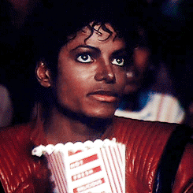
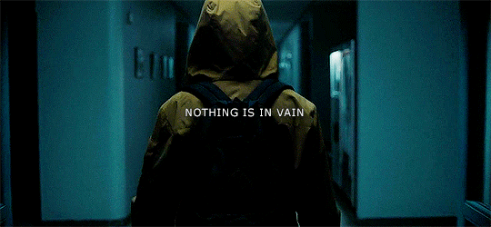
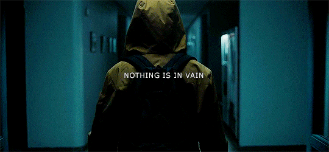

Séries
Bem-vindo à nossa seção de séries! Aqui você encontrará informações sobre as séries mais populares, episódios, trailers e muito mais. Nossa equipe de especialistas acompanha as últimas séries e fornece análises detalhadas, para que você possa se manter atualizado sobre o mundo das séries de TV. Explore nossa seleção de séries em destaque e descubra novas histórias para acompanhar. Não perca os próximos lançamentos e eventos especiais relacionados a séries. Fique por dentro das análises de episódios, entrevistas com elenco e criadores, e dicas sobre como aproveitar ao máximo sua maratona de séries. Se você é um entusiasta de séries de TV, este é o lugar ideal para explorar e se manter informado sobre o universo das séries.
- Stranger Things (Netflix) - Uma série de suspense e ficção científica ambientada nos anos 80.
- The Crown (Netflix) - Uma série dramática sobre a Rainha Elizabeth II do Reino Unido.
- The Mandalorian (Disney+) - Uma série de ficção científica no universo de Star Wars.
- Game of Thrones (HBO Max) - Uma série de fantasia épica baseada nos livros de George R.R. Martin.
- The Witcher (Netflix) - Uma série de fantasia baseada nas histórias do bruxo Geralt de Rívia.
- Breaking Bad (Netflix) - Uma série de drama sobre a transformação de um professor de química.
- Fleabag (Amazon Prime Video) - Uma série de comédia e drama sobre uma mulher em Londres.
- The Handmaid's Tale (Hulu) - Uma série distópica baseada no livro de Margaret Atwood.
- The Crown (Netflix) - Uma série dramática sobre a Rainha Elizabeth II.
- Black Mirror (Netflix) - Uma série de antologia de ficção científica que explora a tecnologia.
 

Series destaque
- Dark
- Atlanta
- The Last of Us
Atlanta
SINOPSE & INFOEm Atlanta, Earnest "Earn" Marks (Donald Glover) sai da faculdade, mas não consegue o sucesso na vida profissional que esperava. Ele decide tentar convencer seu primo, o rapper Paperboi (Bryan Tyree Henry), que pode gerenciar sua carreira e torná-lo um artista de grande sucesso. Porém, os dois discordam em diversos âmbitos sobre a divisão entre arte e entretenimento no hip-hop. Além disso, ele terá que lidar com a mãe de seu filho, Vanessa (Zazie Beets), e com o colaborador do primo, Darius (LaKeith Stainfield). Nessa jornada na indústria musical, Earn e Paperboi viverão situações completamente inusitadas e até fora da realidade enquanto buscam ascensão e espaço. A trama utiliza vários elementos inusitados para discutir sobre raça dentro do contexto norte-americano, trazendo questões complexas e ainda pouco debatidas na televisão.
Adorei assistir.
Dark
SINOPSE & INFOQuatro diferentes famílias - Kahnwald, Nielsen, Doppler e Tiedemann - vivem em Winden, uma pequena e aparentemente tranquila cidade alemã. A rotina dos moradores vira de cabeça para baixo quando duas crianças desaparecem misteriosamente, nas proximidades de uma antiga usina nuclear. Segredos familiares começam a emergir à medida que a polícia investiga os sumiços e logo percebe uma relação com eventos também sombrios do passado. O tempo e o espaço parecem se embaralhar cada vez mais, deflagrando uma série de tragédias que, curiosamente, se repete a cada geração.
Adorei assistir.
The Last of Us
SINOPSE & INFOSINOPSE & INFO The Last of Us é uma série distópica da HBO baseada na franquia de jogos de videogame de mesmo nome criada por Neil Druckmann. O drama narra um futuro pandêmico que foi devastador para humanidade, deixando os seres humanos à beira da extinção. O vírus transforma pessoas em canibais e se espalha rapidamente com uma simples mordida. Algumas décadas depois, os poucos sobreviventes que restaram vivem viajando ou em quarentenas protegidas por oficiais do governo
Adorei assistir.